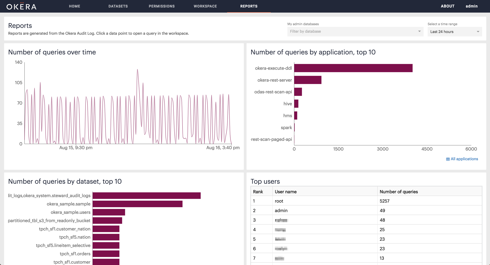
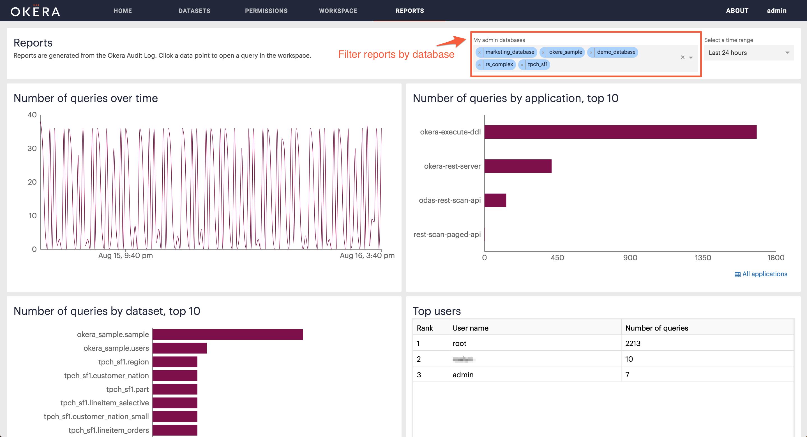
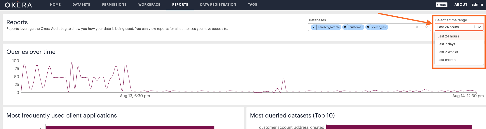
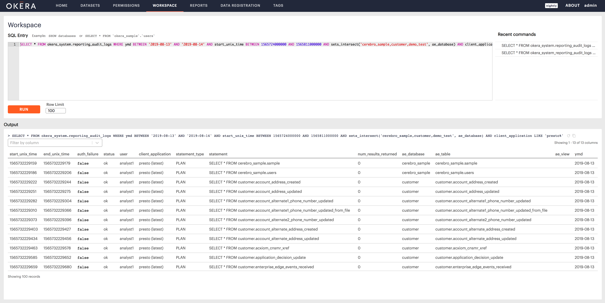
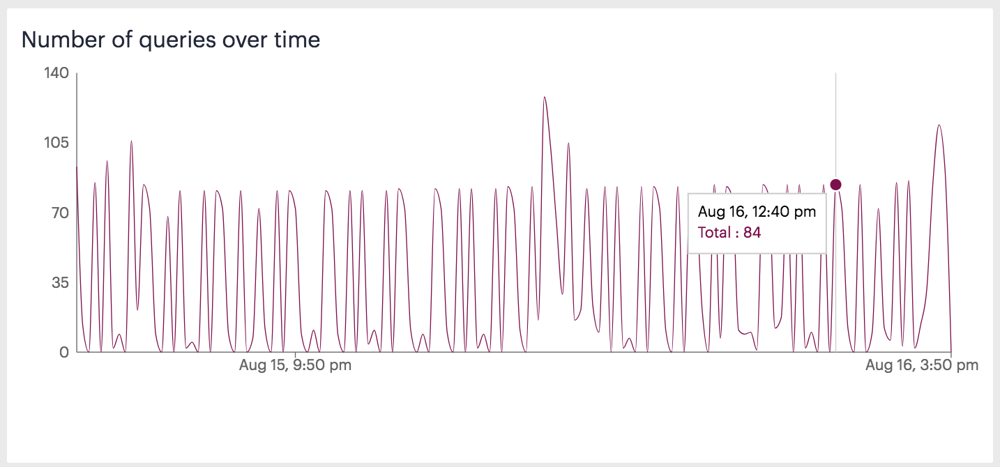
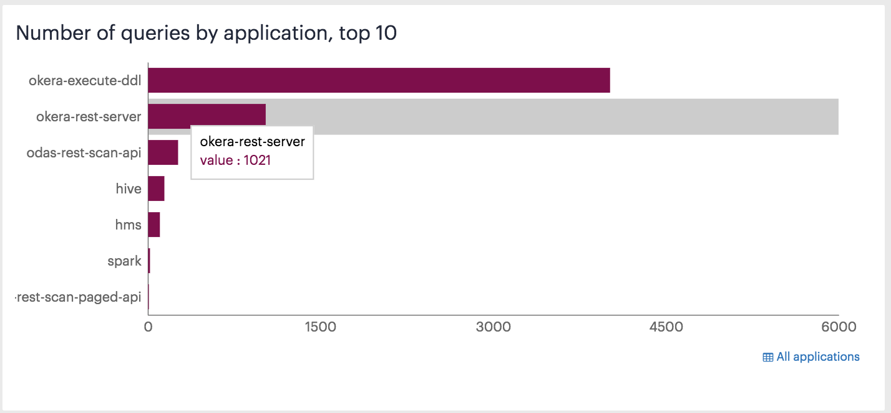
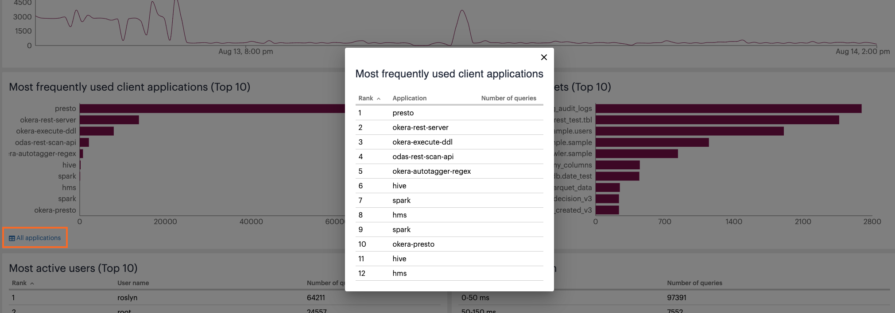
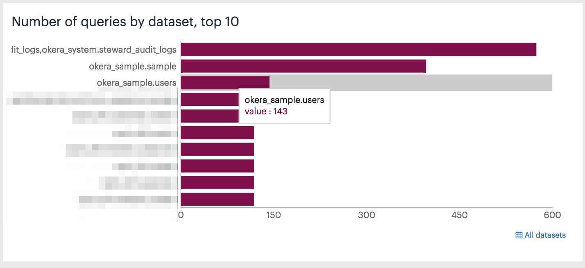
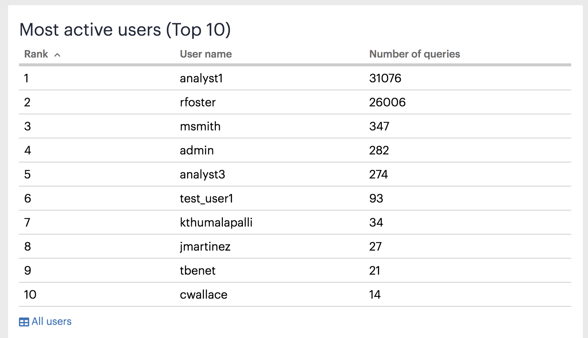
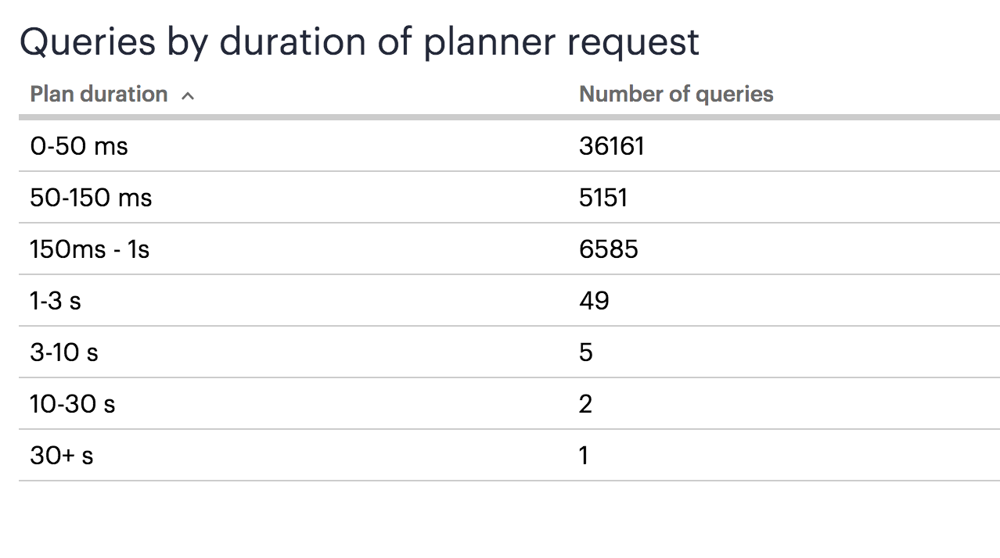

Reports Page
The Okera Portal provides a Reports page for users with admin privileges to view usage metrics on datasets for which they are admins.
The Reports page is driven from the Okera audit logs, which contain information on everything that happens in the Okera system (for more on the structure of the audit logs, see Auditing).

Enabling the Reports page
See here for how to enable access to the reports page.
Note that even though a user has access to the Reports page, the audit views are set up to only show audit logs pertaining to the datasets a user has ALL privileges on. In some Okera configurations, almost no users have ALL privileges on any dataset.
In this case we suggest creating a special role that has ALL privileges on the datasets for which users need to see reports.
That special role can be granted to the groups that need access to reports.
Note: Users who do not have admin privileges on any dataset will not be able to see any reports under the
Reportstab.
Filtering by database
By default Reports will show aggregated metrics for all of the datasets on which the current user has admin privileges.
You can change which database or set of databases the reports show using the multi-select dropdown in the top right of the page labelled “My admin databases”.
Selecting a database or multiple databases will cause the page to generate reports that include only the datasets for which you are admin in the selected databases.
Note: If you do not see any reports when you select a database, you may not have admin access to that data. Please verify using the Permissions page or talk to your administrator.

Changing the time range
The default time range on the Reports page is “Last 24 hours”.
This means that every report on the page will be showing data only for queries that occurred in the 24 hours prior to the page visit.
Using the dropdown labeled “Select a time range” you can change the time range used to generate the reports to one of the following options:
- Last 24 hours (default): reports will show data from the 24 hours prior to visiting the page.
- Last 7 days: reports will show data for 7 days prior to visiting the page.
- Today: reports will show data for the current calendar day.
- Yesterday: reports will show data for the calendar day prior to the current day.

Drilldowns
Each report in the Reports page supports drilling down on the data by clicking on the data point to open a query in Workspace.
This allows users to explore the underlying data powering the reports and enables them to modify the query to find other insights.
Each report has a slightly different drilldown query, but they all follow a similar pattern of a base query restricted by time, followed by additional constraints. For example, the drilldown for “Number of queries by dataset” looks like this:
select * from okera_system.reporting_audit_logs
where ymd>='2018-08-12' and ymd<='2018-08-13'
and start_unix_time>=1534113600000 and start_unix_time<=1534200600000
and client_application like 'hive%'
There are a few things to note about this query:
- We are selecting from
okera_system.reporting_audit_logs, this is a special system view that has permissions so users will only see data for datasets on which they have admin privileges. - We are restricting by
ymdandstart_unix_time. This seems redundant, but it helps performance by first choosing the right partition, then restricting data further based on timestamps. - Finally, the query restricts to all client applications starting with
hive. This is to capture all versions of “hive”. - Timestamps are UTC timestamps in milliseconds.
To run the query, click Run.
You will see the audit log data for the specified time range. Note that results are restricted to the number of rows in the “Row limit” box.
If you need to see more results, you can use the same query in an EMR cluster or whatever other client application you use to query data through Okera.

Example of a reports drilldown in workspace
Understanding the reports
There are four reports displayed on the Reports page. They should mostly make sense without a lot of explanation, but each has a few details to note.
- Number of queries over time
- Number of queries by client application
- Number of queries by dataset
- Top users
- Number of queries by duration
Number of queries over time

This report shows the number of queries that occurred during the selected time range as a trend with each point representing the sum of queries in a particular time bucket. The total time range is broken into buckets of a set size and the number of queries occurring during each bucket-sized span are summed to produce each point. For day-long time ranges, the buckets are 10 minutes, for week-long time ranges, the buckets are an hour and 40 minutes. Points’ timestamps represent the end of the bucket. So, in a “Last 24 hours” report, if the value or a point is 120, that means 120 queries occurred in the 10 minutes prior to the time on the point.
“Number of queries over time” supports drilling down to see the actual list of queries in a particular bucket.
To drill down, pick a bucket and click on it.
You will be redirected to the Workspace page where the query to look up the time bucket in question will already be populated. It will look similar to:
select * from okera_system.reporting_audit_logs
where ymd>='2018-08-06' and ymd<='2018-08-13'
-- Timestamps below restrict data to timerange for reports ('Last 24 hours')
and start_unix_time>=1533585000000
and start_unix_time<=1534190400000
-- Timestamps below restrict data to specific bucket that was clicked
and start_unix_time>=1533936000000
and start_unix_time<=1533942000000
In addition to the details mentioned in the Drilldowns section above, this query has 4 unix timestamps.
The first two timestamps are part of the base query, restricting the data to the outer time range of the time chart (“Last 24 hours”, “Last 7 days”, etc.), and the next two timestamps restrict the range to the specific bucket that was clicked.
All of them intentionally restrict against start_unix_time, so we are counting when events started, not when they complete.
Number of queries by client application

This report shows the most popular client applications ranked by number of queries run in the given time range. The top ten client applications are represented as bars in a bar chart, and more applications will can be shown by clicking on the “All applications” button at the bottom of the panel. Mouseover on the bars in the chart will show the number of queries on the application. In the top ten bar chart, various versions of an application will be combined into one bar, but in the “All applications” modal, each version of an the application will be separated.

Clicking on any of the bars will drill down to the Workspace with a query similar to this one populated:
select * from okera_system.reporting_audit_logs
where ymd>='2018-08-12' and ymd<='2018-08-13'
and start_unix_time>=1534113000000
and start_unix_time<=1534200000000
and client_application like 'hive%'
As discussed in the Drilldowns section above, this query gets the audit logs in the current time range and filters by application name.
It uses like to pick up all versions of the application, which is stored as a string with the name first, then version.
Number of queries by dataset

This report is very similar to “Number of queries by client application”, showing the most queried datasets in the selected time range. The top ten datasets are represented as bars in the bar chart, and the rest can be viewed by clicking “All datasets”. You may notice some entries include multiple datasets separated by commas. Those counts represent queries that included both of the datasets. Mouseover on the bars in the chart will show the number of queries on that dataset.
Clicking on any of the bars will drill down to the Workspace with a query similar to this one populated:
select * from okera_system.reporting_audit_logs
where ymd>='2018-08-12' and ymd<='2018-08-13'
and start_unix_time>=1534115400000
and start_unix_time<=1534202400000
and (ae_table='okera_sample.users' or ae_view='okera_sample.users')
In addition to the details mentioned in the Drilldowns section above, this query restricts ae_table or ae_view to the specified dataset.
Top users

As the name implies, this report shows a list of users in the system, ranked by how many queries they ran in the given time frame.
Clicking on any row in the list will drill down to the Workspace with a query similar to this one populated:
select * from okera_system.reporting_audit_logs
where ymd>='2018-08-12' and ymd<='2018-08-13'
and start_unix_time>=1534115400000
and start_unix_time<=1534202400000
and user='sample_user'
Like the other drilldowns, this query restricts results based on time, then adds an additional constraint. In this case, exact user name.
Number of queries by duration

This report shows the number of queries in the given time frame, grouped by the duration they took to run.
Clicking on any row in the list will drill down to the Workspace with a query similar to this one populated:
SELECT * FROM okera_system.reporting_audit_logs
WHERE ymd BETWEEN '2019-01-04' AND '2019-01-05'
AND start_unix_time BETWEEN 1546565400000 AND 1546652400000
and filename_matches('cdas*|planner*')
and end_unix_time - start_unix_time > 50
and end_unix_time - start_unix_time <= 150
Restricting time range
Reporting time ranges can be restricted via the environment variable OKERA_REPORTING_TIME_RANGE.
This may be necessary in environments with huge data volumes.
If reporting times out for longer time ranges, you may wish to restrict these longer times.
The format of this string should be a comma-delimited pair representing the inclusive boundaries to filter the existing reporting periods (currently ‘Last 24 hours’, ‘7 days’, ‘2 weeks’, and ‘1 month’) supported in the web UI.
Supported inputs are all integer values of hours, days, weeks, and months.
As an example, if you only want reporting options between 5 days and 3 weeks, you would set the environment variable OKERA_REPORTING_TIME_RANGE=5days,3weeks. This would result in the Reports page time range dropdown only showing ‘7 days’ and ‘2 weeks’ as those are the only options within that range supported by the UI.”
Known issue
OKERA_REPORTING_TIME_RANGEmust be set through theSERVICE_ENVIRONMENT_CONFIGSenvironment variable inenv.shinstead of on its own. For exampleexport SERVICE_ENVIRONMENT_CONFIGS="OKERA_REPORTING_TIME_RANGE=5days,3weeks"
Notes on implementation
Time values
The times shown in the reports are all in client-local time. Times stored on the server (and therefore part of drilldowns) are stored as UTC time in milliseconds and represent when each event happened on the server. Each event is counted at its start time, not its end time.
When is data available?
Report data is updated every 5 minutes. Queries run in the last 5 minutes are being logged, but may not be reflected in the reports. Every five minutes a watcher task processes the audit logs, adding them to the corresponding query-able table.
What is being counted?
Queries are not counted 1 to 1 in the audit logs; Okera logs more than one event per user query.
For each query, Okera logs a PLAN event, plus some number of SCAN events depending on the scale of the data being scanned.
For very large scans, the number of events logged can be very high.
All of these events are shown in queries on the audit logs, but in reports most of them are rolled up into a small number of events.
The reports reflect a low constant number of events per query.
The exact number depends on the client and query type, but not on scale of data scanned.
So, for similar queries from the same source, the numbers in the reports are consistent.